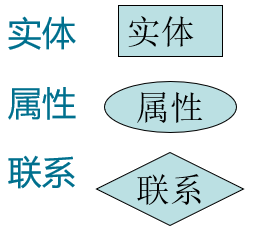
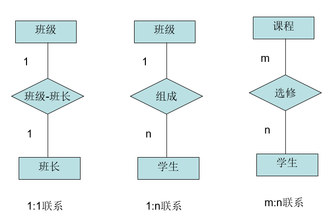
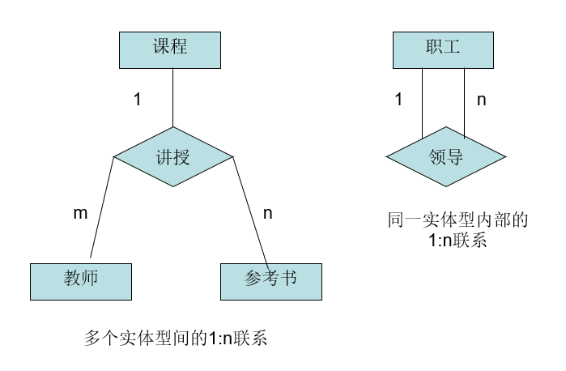
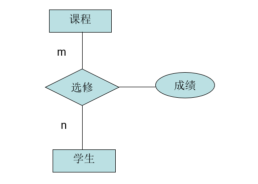
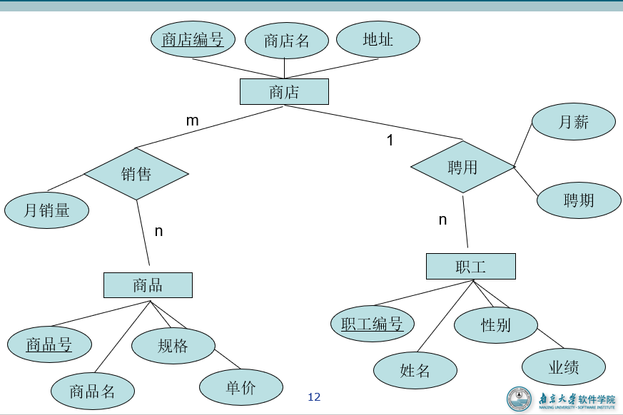

数据管理基础
第一章
ch01 计算、数据与数据管理
人工管理，文件系统，数据库管理
ch02 几个基本概念
数据
数据库中存储的基本对象
定义：描述事物的符号记录
数据的含义称语义
数据库
定义：数据库（Database，简称DB）是长期储存在计算机内、有组织的、可共享的大量数据的集合
基本特征：
- 数据按一定的数据模型组织、描述和储存
- 可为各种用户共享
- 冗余度较小
- 数据独立性较高
- 易扩展
数据库管理系统
数据库管理系统（Database Management System，简称DBMS）
定义：
- 位于用户与操作系统之间的一层数据管理软件
- 是基础软件，是一个大型复杂的软件系统
用途：科学地组织和存储数据、高效地获取和维护数据
主要功能
- 数据定义功能
- 提供数据定义语言（DDL）
- 定义数据库中的数据对象
- 数据组织、存储和管理
- 分类组织、存储和管理各种数据
- 确定组织数据的文件结构和存取方式
- 实现数据之间的联系
- 提供多种存取方法提高存取效率
- 数据操纵功能
- 提供数据操纵语言（DML）
- 实现对数据库的基本操作 （查询、插入、删除和修改）
- 数据库的事务管理和运行管理
- 数据库在建立、运行和维护时由数据库管理系统统一管理和控制
- 保证数据的安全性、完整性、多用户对数据的并发使用
- 发生故障后的系统恢复
数据库系统
l数据库系统（Database System，简称DBS）
在计算机系统中引入数据库后的系统构成
构成：
- 数据库
- 数据库管理系统（及其应用开发工具）
- 应用程序
- 数据库管理员（DBA）
数据库的特点
数据结构化
- 整体结构化
- 不再仅仅针对某一个应用，而是面向全组织
- 不仅数据内部结构化，整体是结构化的，数据之间具有联系
- 数据记录可以变长
- 数据的最小存取单位是数据项
- 数据的用数据模型描述，无需应用程序定义
数据的共享性高，冗余度低且易扩充
数据面向整个系统，可以被多个用户、多个应用共享使用。
数据共享的好处
- 减少数据冗余，节约存储空间
- 避免数据之间的不相容性与不一致性
- 使系统易于扩充
数据独立性高
- 物理独立性
- 指用户的应用程序与数据库中数据的物理存储是相互独立的。当数据的物理存储改变了，应用程序不用改变。
- 逻辑独立性
- 指用户的应用程序与数据库的逻辑结构是相互独立的。数据的逻辑结构改变了，应用程序不用改变。
- 数据独立性由数据库管理系统的二级映像功能来保证。
数据由数据管理系统统一管理和控制
- 数据库管理系统提供的数据控制功能
- 数据的安全性（Security）保护
- 保护数据以防止不合法的使用造成的数据的泄密和破坏。
- 数据的完整性（Integrity）检查
- 保证数据的正确性、有效性和相容性。
- 并发（Concurrency）控制
- 对多用户的并发操作加以控制和协调，防止相互干扰而得到错误的结果。
- 数据库恢复（Recovery）
- 将数据库从错误状态恢复到某一已知的正确状态。
- 数据的安全性（Security）保护
ch03 数据模型
数据模型
数据模型是对现实世界数据特征的抽象，用以抽象、表示和处理现实世界中的数据和信息
数据模型应满足三方面要求
- 能比较真实地模拟现实世界
- 容易为人所理解
- 便于在计算机上实现
数据模型是数据库系统的核心和基础
概念模型（信息模型）
按用户的观点来对数据和信息建模，用于数据库设计
逻辑模型
按计算机系统的观点对数据建模，用于DBMS实现
主要包括网状模型、层次模型、关系模型、面向对象数据模型、对象关系数据模型、半结构化数据模型等。
物理模型
是对数据最底层的抽象，描述数据在系统内部的表示方式和存取方法。
两步抽象
- 将显示世界中的客观对象抽象为概念模型
- 将现实世界抽象为信息世界
- 把概念模型转换为特定DBMS支持的数据模型
- 将信息世界转换为机器世界
数据结构
描述数据库的组成对象，以及对象之间的联系
内容：
- 与对象的类型、内容、性质有关
- 与数据之间联系有关
数据结构是对系统静态特性的描述。
数据操作
对数据库中各种对象（型）的实例（值）允许执行的操作的集合，包括操作及有关的操作规则
数据操作是对系统动态特性的描述
数据完整性约束条件
- 数据的完整性约束条件，一组完整性规则的集合
- 完整性规则：给定的数据模型中数据及其联系所具有的制约和依存规则
- 用以限定符合数据模型的数据库状态以及状态的变化，以保证数据的正确、有效和相容
- 数据模型对完整性约束条件的定义
- 反映和规定必须遵守的基本的通用的完整性约束条件。
- 提供定义完整性约束条件的机制，以反映具体应用所涉及的数据必须遵守的特定的语义约束条件。
ch04 概念模型
用途：
- 概念模型用于信息世界的建模
- 是现实世界到机器世界的一个中间层次
- 是数据库设计的有力工具
- 数据库设计人员和用户之间进行交流的语言
基本要求：
- 较强的语义表达能力
- 简单、清晰、易于用户理解
实体 Entity
- 客观存在并可互相区别的事物
- 可以是具体的人、事、物或抽象的概念
属性 Attribute
- 实体所具有的某一特性
- 一个实体可以有若干个属性
码 Key
- 唯一标识实体的属性
实体型 Entity Type
- 用实体名及其属性名集合来抽象和刻画同类实体称为实体型
实体集 Entity Set
- 同一类型实体的集合称为实体集
联系 Relationship
- 现实世界中事物内部以及事物之间的联系在信息世界中反映为实体（型）内部的联系和实体（型）之间的联系。
实体之间的联系
实体内部的联系
实体-联系方法 Entity-Relationship Approach
E-R图     
ch05 逻辑模型
常用数据模型
- 格式化模型
- 层次模型
- 网状模型
- 关系模型
- 对象模型
- 面向对象数据模型
- 对象关系数据模型
关系 Relation
一个关系对应通常说的一张表
元组 Tuple
表中的一行即为一个元组
属性 Attribute
表中的一列即为一个属性，给每一个属性起一个名称即属性名
主码 Key
也称码键。表中的某个属性组，它可以唯一确定一个元组
域 Domain
是一组具有相同数据类型的值的集合。属性的取值范围来自某个域。
分量
元组中的一个属性值。
关系模式
- 对关系的描述
- 关系名（属性1，属性2，…，属性n）
- 学生（学号，姓名，年龄，性别，系名，年级）
关系必须是规范化的，满足一定的规范条件
- 最基本的规范条件：关系的每一个分量必须是一个不可分的数据项, 不允许表中还有表
关系模型的操作与完整性约束
数据操作（查询、插入、删除、更新）是集合操作，操作对象和操作结果都是关系
存取路径对用户隐蔽，用户只要指出“干什么”，不必详细说明“怎么干”
关系的完整性约束条件
- 实体完整性
- 参照完整性
- 用户定义的完整性
优点
- 建立在严格的数学概念的基础上
- 概念单一
- 实体和各类联系都用关系来表示
- 对数据的检索结果也是关系
- 关系模型的存取路径对用户透明
- 具有更高的数据独立性，更好的安全保密性
- 简化了程序员的工作和数据库开发建立的工作
缺点
- 存取路径对用户透明，查询效率往往不如格式化数据模型
- 为提高性能，必须对用户的查询请求进行优化，增加了开发DBMS的难度
NoSQL
- 基于Key-Value存储模型
- 基于文档模型
- 列族模型
- 基于图模型
- 记为G (V, E)，V为结点(node) 集合，每个结点具有若干属性，E为边(edge) 集合，也可以具有若干属性。
ch06 数据库系统的结构
- 开发人员角度
- 三级模式结构
- 最终用户角度
- 单用户
- 主从式
- 分布式
- 客户-服务器
- 浏览器-应用服务器 / 数据库服务器多层结构
模式 Schema
- 数据库逻辑结构和特征的描述
- 是型的描述，不涉及具体值
- 翻译数据的结构及其联系
- 相对稳定
实例 Instance
反映数据库某一时刻的状态
- 模式的一个具体值
同一个模式可以有很多实例
实例随数据库中的数据的更新而变动
模式 Schema （也称逻辑模式）
- 数据库中全体数据的逻辑结构和特征的描述
- 所有用户的公共数据视图
- 一个数据库只有一个模式
定义
- 数据库的逻辑结构（数据项的名字、类型、取值范围等）
- 数据之间的联系
- 数据有关的安全性、完整性要求
地位
- 是数据库系统模式结构的中间层
- 与具体的应用程序、开发工具及高级程序设计语言无关
外模式 External Schema （也称子模式或用户模式）
- 数据库用户（包括应用程序员和最终用户）使用的局部数据的逻辑结构和特征的描述
- 数据库用户的数据视图，是与某一应用有关的数据的逻辑表示
- 外模式的地位：介于模式与应用之间
- 模式与外模式的关系：一对多
- 外模式通常是模式的子集
- 一个数据库可以有多个外模式。反映了不同的用户的应用需求、看待数据的方式、对数据保密的要求
- 对模式中同一数据，在外模式中的结构、类型、长度、保密级别等都可以不同
- 外模式与应用的关系：一对多
- 同一外模式也可以为某一用户的多个应用系统所使用
- 但一个应用程序只能使用一个外模式
- 模式与外模式的关系：一对多
- 外模式的用途
- 保证数据库安全性的一个有力措施
- 每个用户只能看见和访问所对应的外模式中的数据
内模式 Internal Schema （也称存储模式）
- 内模式（也称存储模式）
- 是数据物理结构和存储方式的描述
- 是数据在数据库内部的表示方式
- 记录的存储方式（例如，顺序存储，堆存储，hash存储等）
- 索引的组织方式
- 数据是否压缩存储
- 数据是否加密
- 数据存储记录结构的规定
- 一个数据库只有一个内模式
数据库的二级映像与数据独立性
- 三级模式是对数据的三个抽象级别
- 二级映象在数据库管理系统内部实现这三个抽象层次的联系和转换
- 外模式／模式映像
- 模式／内模式映像
外模式 / 模式映像
- 模式：描述的是数据的全局逻辑结构
- 外模式：描述的是数据的局部逻辑结构
- 同一个模式可以有任意多个外模式
- 每一个外模式，数据库系统都有一个外模式／模式映象，定义外模式与模式之间的对应关系
- 映象定义通常包含在各自外模式的描述中
- 保证数据的逻辑独立性
- 当模式改变时，数据库管理员对外模式／模式映象作相应改变，使外模式保持不变
- 应用程序是依据数据的外模式编写的，应用程序不必修改，保证了数据与程序的逻辑独立性，简称数据的逻辑独立性
模式／内模式映像
- 模式／内模式映象定义了数据全局逻辑结构与存储结构之间的对应关系。
- 例如，说明逻辑记录和字段在内部是如何表示的
- 数据库中模式／内模式映象是唯一的
- 该映象定义通常包含在模式描述中
- 保证数据的物理独立性
- 当数据库的存储结构改变了（例如选用了另一种存储结构），数据库管理员修改模式／内模式映象，使模式保持不变。
- 应用程序不受影响。保证了数据与程序的物理独立性，简称数据的物理独立性。
不知道归哪一类，总之无意义
数据库模式
- 即全局逻辑结构是数据库的中心与关键
- 独立于数据库的其他层次
- 设计数据库模式结构时应首先确定数据库的逻辑模式
数据库的内模式
- 依赖于它的全局逻辑结构
- 独立于数据库的用户视图，即外模式
- 独立于具体的存储设备
- 将全局逻辑结构中所定义的数据结构及其联系按照一定的物理存储策略进行组织，以达到较好的时间与空间效率
数据库的外模式
面向具体的应用程序
定义在逻辑模式之上
独立于存储模式和存储设备
当应用需求发生较大变化，相应外模式不能满足其视图要求时，该外模式就得做相应改动
设计外模式时应充分考虑到应用的扩充性
特定的应用程序
- 在外模式描述的数据结构上编制的
- 依赖于特定的外模式
- 与数据库的模式和存储结构独立
- 不同的应用程序有时可以共用同一个外模式
数据库的二级映像
- 保证了数据库外模式的稳定性
- 从底层保证了应用程序的稳定性，除非应用需求本身发生变化，否则应用程序一般不需要修改
数据与程序之间的独立性，使得数据的定义和描述可以从应用程序中分离出去
数据的存取由数据库管理系统管理
- 简化了应用程序的编制
- 大大减少了应用程序的维护和修改
ch07 数据库系统的组成
软硬件平台
- 硬件平台及数据库
- 数据库系统对硬件资源的要求
- 足够大的内存
- 足够的大的磁盘或磁盘阵列等设备
- 较高的通道能力，提高数据传送率
- 数据库系统对硬件资源的要求
- 软件
- 数据库管理系统
- 支持数据库管理系统运行的操作系统
- 与数据库接口的高级语言及其编译系统
- 以数据库管理系统为核心的应用开发工具
- 为特定应用环境开发的数据库应用系统
人员
数据库管理员
系统分析员和数据库设计人员
应用程序员
最终用户
数据库管理员（DBA）
决定数据库中的信息内容和结构
决定数据库的存储结构和存取策略
定义数据的安全性要求和完整性约束条件
- 监控数据库的使用和运行
- 周期性转储数据库
- 数据文件
- 日志文件
- 系统故障恢复
- 介质故障恢复
- 监视审计文件
- 周期性转储数据库
- 监控数据库的使用和运行
数据库的改进和重组
- 性能监控和调优
- 定期对数据库进行重组织，以提高系统的性能
- 需求增加和改变时，数据库须需要重构造
- 性能监控和调优
系统分析员
- 负责应用系统的需求分析和规范说明
- 与用户及数据库管理员结合，确定系统的硬软件配置
- 参与数据库系统的概要设计
数据库设计人员
- 参加用户需求调查和系统分析
- 确定数据库中的数据
- 设计数据库各级模式
应用程序员
- 设计和编写应用系统的程序模块
- 进行调试和安装
最终用户（End User）。最终用户通过应用系统的用户接口使用数据库。
- 偶然用户
- 不经常访问数据库，但每次访问数据库时往往需要不同的数据库信息
- 企业或组织机构的高中级管理人员
- 简单用户
- 主要工作是查询和更新数据库
- 银行的职员、机票预定人员、旅馆总台服务员
- 复杂用户
- 直接使用数据库语言访问数据库，甚至能够基于数据库管理系统的应用程序接口编制自己的应用程序
- 工程师、科学家、经济学家、科技工作者等
- 偶然用户
第二章
ch08 关系、关系模式和关系数据库
域 Domain
- 域是一组具有相同数据类型的值的集合。例:
- 整数
- 实数
- 介于某个取值范围的整数
- 指定长度的字符串集合
- {‘男’，‘女’}
- ……………..
笛卡尔积 Cartesian Product
笛卡尔积（Cartesian Product）
- 给定一组域\(D_1, D_2, ..., D_n\)，允许其中某些域是相同的。
- \(D_1, D_2, ..., D_n\)的笛卡尔积为\(D_1 * D_2* ...* D_n = \{(d_1, d_2, ... , d_n) | d_i\in D_i, i=1,2,...,n\}\)
- 所有域的所有取值的一个组合
- 不能重复
元组（Tuple）
- 笛卡尔积中每一个元素\((d_1, d_2, ...,d_n)\)叫作一个n元组（n-tuple）或简称元组
分量（Component）
- 笛卡尔积元素\((d_1, d_2,..., d_n)\)中的每一个值\(d_i\)叫作一个分量
基数（Cardinal number）
- 若\(D_i(i = 1,2,...,n)\)为有限集，其基数为\(m_i(i = 1,2,...,n)\)则\(D_1*D_2*...*D_n\)的基数\(M\)为： \[ M=\prod_{i=1}^nm_i \]
笛卡尔积的表示方法
- 笛卡尔积可表示为一张二维表
- 表中的每行对应一个元组，表中的每列对应一个域
关系 Relation
- \(D_1 * D_2* ...*
D_n\)的子集叫作在域\(D_1, D_2, ...,
D_n\)的关系，表示为\(R(D_1, D_2, ...,
D_n)\)
- \(R\)：关系名
- \(n\)：关系的目或度
- 当\(n=1\)时，称该关系为单元关系或一元关系
- 当\(n=2\)时，称该关系为二元关系
- 关系的表示
- 关系也是一个二维表，表的每行对应一个元组，表的每列对应一个域
- 属性
- 关系中不同列可以对应相同的域
- 为了加以区分，必须对每列起一个名字，称为属性（Attribute）
- n目关系必有n个属性
- 码
- 候选码（Candidate key）
- 若关系中的某一属性组的值能唯一地标识一个元组，而其子集不能，则称该属性组为候选码
- 简单的情况：候选码只包含一个属性
- 最极端的情况：关系模式的所有属性组是这个关系模式的候选码，称为全码（All-key）
- 主码
- 若一个关系有多个候选码，则选定其中一个为主码（Primary key）
- 主属性
- 候选码的诸属性称为主属性（Prime attribute）
- 不包含在任何侯选码中的属性称为非主属性（Non-Prime attribute）或非码属性（Non-key attribute）
- 候选码（Candidate key）